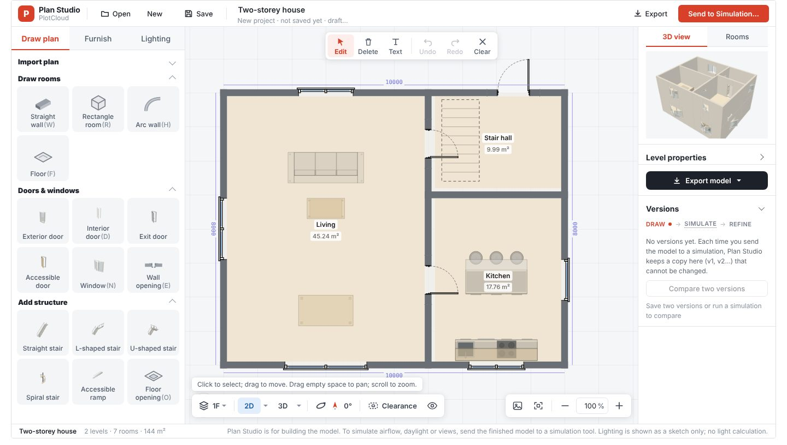

The answers exist.
Getting them takes too long.
Each one usually means another export, another weather file and another round of manual layout. PlotCloud answers them on the same project, with the same conditions.
What do you want
to understand?
Choose a study for the decision in front of you. Open a tool directly, or work with a saved project.
Sun & daylight
Where does light reach, and what changes with the glazing?
Explore light studies ↗Wind & ventilation
How does air move around the building and through its rooms?
Explore airflow ↗Acoustics & movement
How do sound and people move through the space?
Explore indoor studies ↗Rain & structure
Where does water collect? How does the structure respond?
Explore site & structure ↗Change the design.
See what it did.
Compare a baseline with a revised option. Keep the model version, settings and results together.
Existing homepage sample, not your project: Draft daylight, acoustics at 500 Hz, and view analysis. Values reproduced from the current homepage for this layout preview.
Open results & comparison →Test the idea
while you still have it.
Make one change and PlotCloud keeps the rest fixed: same site, same weather, same settings. You see what the change did, not what the setup did.
Adopt a change in one click.
When a daylight result misses your own target, PlotCloud proposes a concrete window change, creates Plan B and reruns the affected studies. Plan A stays exactly as it was.
Know when a comparison is fair.
Absolute and percentage-point differences, with a warning when the weather, grid or method changed between the two results.
Send an editable deck.
PowerPoint, PDF and HTML from the same saved runs, plus a review file your client can comment in and send back for Plan C.
A clear path
through the study.
Keep using your existing modeling workflow. Workspace is available when you want to edit directly.
Bring your design.
Import a supported model, or build a layout in Workspace.
Set the context.
Check the site, orientation and inputs relevant to your study.
Test a question.
Choose the simulation and review its settings, method and limits.
Make the next move.
Compare versions, inspect results and export the work for a review.

Your model.
Your next iteration.
Draw rooms, adjust openings and place furniture. Bring Workspace into the process when a design change needs another test.
Explore Workspace →Keep Rhino.
Skip the re-setup.
PlotCloud does not ask you to change modelling software. It removes the repeated imports, weather files and parameter entry around each study.
Rhino, OBJ, STL, glTF.
Import the model you already have. Every saved version is kept, so the next one can be compared with it.
Start from an address.
The nearest weather station is matched and its EPW checked hour by hour. Station, distance and source are shown, and you can change or upload it.
Show only what you need.
Simple asks for the essentials; Advanced shows every input. Every value shows where it came from, and you can override it once and restore it later.
For practices
and for studios.
Evidence for design reviews.
Compare options with the client, keep the inputs behind every number, and reuse project conditions across the whole job.
Learn by changing one thing.
Guided studies on an editable example, plain-language methods and limits, and no installation for the browser studies.
Radiance and EnergyPlus, locally.
For daylight factor and reviewed EnergyPlus models, run the reference engines on your own computer and bring the results back.
Before you start.
Do I have to stop using Rhino, Revit or CAD?
No. Import OBJ, STL, glTF or Rhino 3DM from your current model. Workspace is there for quick edits when a design change needs another test.
Is it free?
Simulations are currently free to use, with no credit card. See Pricing for saving and syncing options.
Where are my projects kept?
In your browser. If you sign in to a cloud account, projects are also copied there. Account → Backup & data downloads a complete backup that includes weather files.
Is this code compliance or certification?
No. Studies are design screening with the method named on every result. Daylight, energy and comfort certification need their own reviewed process.
Which weather does it use?
The nearest station in the EPWMap catalogue, checked hour by hour. Station, distance and source are shown, and you can choose another station or upload your own EPW.
Can it run Radiance or EnergyPlus?
Yes, on your own computer through the local runner: Radiance daylight factor and reviewed EnergyPlus models. Annual daylight, glare and automatic energy models are not connected yet.
What does “Plan B” do?
For a daylight result below your target, PlotCloud proposes a specific window change, makes a new plan from the saved one and reruns the affected studies. It never promises an improvement before the rerun, and Plan A stays as it was.
Can I use it on a phone?
You can view projects, results and reports on a phone. Modelling and study setup work best on a laptop or desktop.
Start with a study.
Keep a project.
Explore the tools, then see which plan fits the way you save and compare your work.
Explore simulations → View pricingResources,
when you need them.
Drawing tools and design resources to support the analysis and presentation.
Start with an address.
Compare your first options.
Create a project, let the weather be matched, bring your model and run the first study.